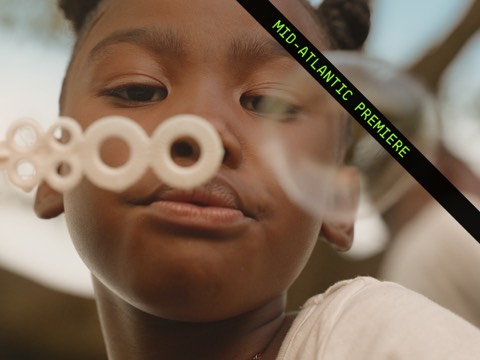

Panel · DX² · Double Exposure 2025
Race in Real Time
Thursday, October 30, 2025 · 2:15 PM–3:30 PM · Johns Hopkins University Bloomberg Center, Fourth Floor, Link Room
Dramatic steps to whitewash the American story in the name of “patriotic education” don’t simply reshape what we see on display at our national museums or read in textbooks—they rewrite who has a place in the American story. Black filmmakers committed to investigative, truth-driven work about Black heritage and experience, find themselves fighting not only for funding and access—but at times for the ability to tell stories that reflect an honest reckoning with racism, violence, and activism. The urgent question isn’t simply how to restore lost stories, but how to tell them, and defend the right to ask difficult questions in the face of concerted efforts to sanitize America’s past. Who gets to shape American memory? How can filmmakers keep the door open for critical narratives that challenge the status quo?
Recording
Films discussed

CycleLaura Dyan Kezman, William Howell2025 · 95 min Teaching AmericaAnurima Bhargava2025 · 20 min
Teaching AmericaAnurima Bhargava2025 · 20 min
Sources
Related sessions
- 2025 · Thu Oct 30 · 1:00 PMPanel · DX²Fog of Falsehood: Disinformation, AI, and the Battle Over RealityGaia de Simoni, Eugene Jarecki, Ben Loeterman, Nick Quested, Kate Stonehill, Zach Toombs
- 2025 · Fri Oct 31 · 10:20 AMPanel · DX²Against the Current: Breaking Through the Dominant NarrativeCostas Christ, Norah Shapiro, Elizabeth Foy Larsen, Jacqueline Olive, Abraham Joffe
- 2025 · Fri Oct 31 · 11:30 AMPanelBetween Care and Truth: Ethical Dilemmas in Character-Driven DocumentaryPatricia Aufderheide, Hanna Lane Miller, Bridget Hunnicutt, Nick Price, Hanna Lane Miller
- 2025 · Fri Oct 31 · 3:20 PMConversationSubterfuge in Search of Truth: Mads Brügger in Conversation with Ted HopeMads Brügger, Ted Hope
- 2025 · Fri Oct 31 · 3:20pmPanel · DX²Subterfuge in Search of TruthMads Brügger, Ted Hope
- 2024 · Fri Nov 8 · 1:00 PMPanel · DX²Mining and Contributing to Archives: Crafting the Future of Documentary StorytellingMacky Alston, Selina Lewis Davidson, Gaia de Simoni, Ben Loeterman, Teresa Murphy, Rachel Antell
- 2024 · Thu Nov 7 · 11:30 AMPanel · DX²Generative AI: Toward Best Practices in Documentary ProductionRachel Antell, Justine Bateman, Brandon Butler, Daniel Freed, Graham Sack
- 2024 · Thu Nov 7 · 1:30 PMPanel · DX²Cross Country: Unpacking Regionalism in Documentary FilmmakingAaron Asbury, Laura Deutch, Ryan Pearson, Ouida Washington, Nick Price